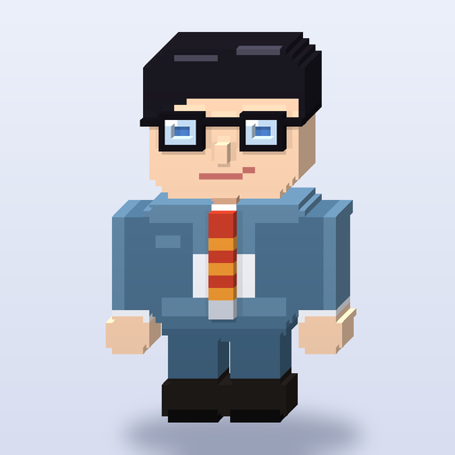
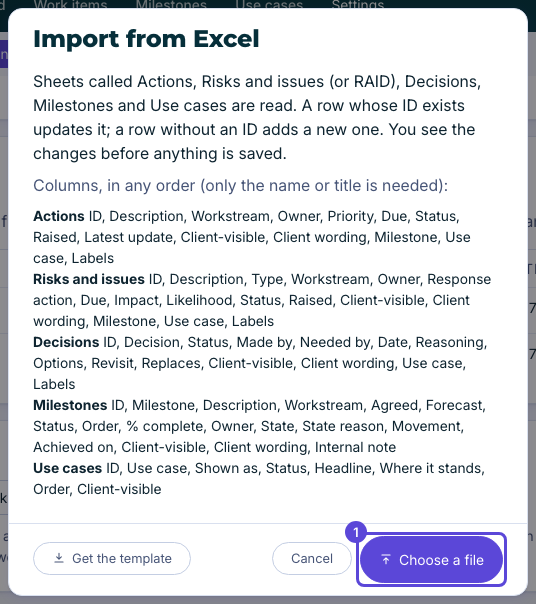

The weekly project report, written from the work itself.
clark is a report editor for programme managers. It keeps the project in one place on your own Mac, and publishes the weekly report as one web page you can send to a client.

Meet clark.The problem
Every week the report is written again, from lists spread over spreadsheets, emails and notes.
The answer
clark keeps your actions, risks, issues, decisions, milestones and use cases in one place, and the report is written from that work.
What it gives you
Write the report where you read it
Switch between View and Edit, change a status, owner or date in place, and Undo anything.
Keep the log
Actions, risks, issues and decisions, each with an owner, a due date and a history.
Track milestones
On a timeline or a calendar, with a slipped date shown against the agreed one.
Choose what the client sees
Each item and section can be left out of the published page with one click.
Work with Excel
Bring in a workbook you already keep, and export your work items, milestones and use cases back out.
Save on its own, undo any time
Every change saves on its own, and every change can be undone.
How it works

1Keep the log
Add work items by hand with the + buttons, or bring them in from Excel.

2Choose what the client sees
Leave out any item or section you do not want on the published page.

3Publish as one web page
It opens anywhere, with no server and no sign-in.
Private by design
Get clark
Open this repository’s Releases page and download the latest clark zip for Mac. Unzip it and double-click clark.command.
What it needs
A Mac and Google Chrome, with Python 3.9 or newer. To check your Mac is ready, type python3 -m clark.doctor in Terminal.